조경기능사 (2006-10-01 기출문제)
1과목: 조경일반
1. 조경에서 비스타(vista)에 대한 설명으로 틀린 것은?
- 좌우로 시선을 제한하여 일정 지점으로 시선이 모이도록 구성된 경관이다.
- 정원을 실제 넓이보다 한층 더 넓어 보이는 효과가 있다.
- 일명 통경선 강조 수법이라고 말한다.
- 영국식 자연 풍경식 정원에 많이 사용된다.
(정답률: 78%)

2. 조경계획의 과정을 기술한 것 중 가장 잘 표현한 것은?
- 자료분석 및 조합 - 목표설정 - 기본계획 - 실시설계 - 기본설계
- 목표설정 - 기본설계 - 자료분석 및 종합 - 기본계획 - 실시설계
- 기본계획 - 목표설정 - 자료분석 및 종합 - 기본설계 - 실시설계
- 목표설정 - 자료분석 및 종합 - 기본계획 - 기본설계 - 실시설계
(정답률: 84%)
3. 경계식재로 사용하는 조경수목의 조건으로 옳은 것은?
- 지하고가 높은 낙엽활엽수
- 꽃, 열매, 단풍 등이 특징적인 수종
- 수형이 단정하고 아름다운 수종
- 잎과 가지가 치밀하고 전정에 강하고, 아랫가지가 말라 죽지 않는 상록수
(정답률: 84%)
4. 도면에 수목을 표시하는 방법으로 잘못된 것은?
- 간단한 원으로 표현하는 방법도 있다.
- 덩굴성 식물의 경우에는 줄기와 잎을 자연스럽게 표현한다.
- 활엽수의 경우에는 직선이나 톱날 형태를 사용하여 표현한다.
- 윤곽선의 크기는 수목의 성숙 시 퍼지는 수관의 크기를 나타낸다.
(정답률: 66%)
5. 서아시아의 수렵원(hunting garden)의 계획 기법으로 올바른 것은?
- 포도나무를 심어 그늘지게 하였다.
- 노단 위에 수목과 덩굴식물을 식재하였다.
- 인공으로 언덕을 쌓고 인공호수를 조성하였다.
- 성림을 조성하여 떡갈나무와 올리브를 심었다.
(정답률: 58%)
6. 조경분야 프로젝트 수행단계의 순서가 올바른 것은?
- 계획 - 시공 - 설계 - 관리
- 계획 - 관리 - 시공 - 설계
- 계획 - 관리 - 설계 - 시공
- 계획 - 설계 - 시공 - 관리
(정답률: 92%)
7. 일본정원의 효시라고 할 수 있는 수미산과 홍교를 만든 사람은?
- 몽창국사
- 소굴원주
- 노자공
- 풍신수길
(정답률: 90%)
8. 다음 중 어떤 대상 물체가 하늘을 배경으로 이루어지는 윤곽선을 가리키는 것은?
- 비스타
- 스카이라인
- 영지
- 수목질감
(정답률: 89%)
9. 다음 중 대칭(symmerty)의 미를 사용하지 않은 것은?
- 영국의 자연풍격식
- 프랑스의 평면기하학식
- 이탈리아의 노단 건축식
- 스페인의 중정식
(정답률: 80%)
10. 보행자 2인이 나란히 통행하는 원로의 폭으로 가장 적합한 것은?
- 0.5 ~ 1.0 m
- 1.5 ~ 2 m
- 3.0 ~ 3.5 m
- 4.0 ~ 4.5 m
(정답률: 89%)
11. 생물을 직접 다루며, 전체적으로 공학적인 지식이 가장 많이 필요로 하는 수행단계는?
- 계획단계
- 시공단계
- 관리단계
- 설계단계
(정답률: 86%)
12. 물체를 위에서 내려다 본 것으로 가정하고 수평면상에 투영하여 작도한 것은?
- 평면도
- 상세도
- 입면도
- 단면도
(정답률: 84%)
13. 피아노의 리듬에 맞추어 움직이는 분수를 계획할 때 가종해서 적용할 경관 구성원리는?
- 율동
- 조화
- 균형
- 비례
(정답률: 91%)
14. 조경가가 이상적인 도시생활 환경을 만들기 위하여 노력해야 할 방향과 거리가 먼 것은?
- 기존의 자연지형을 과감하게 변경시키는 방향으로 계획을 수립한다.
- 새로운 과학기술을 도입하여 생활환경을 개선시켜 나간다.
- 건축, 토목, 지역계획 등 관련 분야와 협력하여 계획을 수립한다.
- 가급적 기존의 자연환경을 살리면서 기능적이고 경제적인 이용방안을 찾아낸다.
(정답률: 86%)
15. 이탈리아의 노단건축식 정원 양식이 생긴 원인으로 가장 적합한 것은
- 식물
- 암석
- 지형
- 역사
(정답률: 92%)
2과목: 조경재료
16. 조경 재료는 식물재료와 인공재료로 크게 구분이 되는데 다음 중 인공재료의 특성으로 옳은 것은?
- 자연성
- 연속성
- 불변성
- 조화성
(정답률: 81%)
17. 플라스틱 제품의 특성으로 옳은 것은?
- 콘크리드, 알루미늄보다 가볍고, 어느 정도의 강도와 탄력성이 있다.
- 내열성이 크고 내후성, 내광성이 좋다.
- 불에 타지 않으며 부식이 된다.
- 내산성, 내충격성 등의 특성이 있다.
(정답률: 81%)
18. 중국 조경에 많이 이용되었던 중국의 태호석(太湖石)은 어떤 부류에 속하는가?
- 괴석(怪石)
- 환석(丸石)
- 각석(角石)
- 와석(臥席)
(정답률: 86%)
19. 다음 중 습지를 좋아하는 수종은?
- 낙우송
- 소나무
- 자작나무
- 느티나무
(정답률: 79%)
20. 다음 중 이식이 가장 어려운 수종은?
- 은행나무
- 일본목련
- 팽나무
- 오동나무
(정답률: 55%)
21. 지름이 2 ~ 3 cm 되는 것으로 콘크리트의 골재, 작은 면적의 포장용, 미장용 등으로 사용되는 것은?
- 왕모래
- 자갈
- 호박돌
- 산석
(정답률: 83%)
22. 다음 중 여름에서 가을까지 꽃을 피우는 수종으로 틀린 것은?
- 호랑이가시나무
- 박태기나무
- 은목서
- 협죽도
(정답률: 48%)
23. 다음 중 양수 수종이 아닌 것은?
- 메타세콰이어
- 굴거리나무
- 버즘나무
- 자작나무
(정답률: 46%)
24. 다음 조경소재 중 판석의 쓸임새로 가장 적합한 것은?
- 주춧돌
- 콘크리트의 골재
- 원로 포장
- 석축
(정답률: 81%)
25. 생태복원용으로 이용되는 재로로 거리가 먼 것은?
- 식생매트
- 식생자루
- 식생호안 블록
- FRP
(정답률: 93%)
26. 물에 대한 설명이 틀린 것은?
- 호수, 연못, 풀 등은 정적으로 이용된다.
- 분수, 폭포, 벽천, 계단폭포 등은 동적으로 이용된다.
- 조경에서 물의 이용은 동, 서양 모두 즐겨 했다.
- 벽천을 다른 수경에 비해 대규모 지역에 어울리는 방법이다.
(정답률: 86%)
27. 목재의 건조 방법 중 인공건조법이 아닌 것은?
- 침수법
- 증기법
- 훈연 건조법
- 공기가열 건조법
(정답률: 82%)
28. 주경수목의 분류 중 상록관목에 해당되지 않은 것은?
- 피라칸사스
- 꽝꽝나무
- 호랑가시나무
- 보리수나무
(정답률: 66%)
29. 다음 화훼류 중 알뿌리가 아닌 것은?
- 튤립
- 수선화
- 칸나
- 스위트 앨리섬
(정답률: 80%)
30. 다음 중 수로의 사면보호, 연못바닥, 벽면 장식 등에 주로 사용되는 자연석은?
- 산석
- 호박돌
- 잡석
- 하천석
(정답률: 75%)
31. 도시 내 도로주변의 녹지에 수목을 식재하고자 할 때 적당하지 않은 수종은?
- 쥐똥나무
- 벽오동나무
- 향나무
- 전나무
(정답률: 57%)
32. 다음 그림과 같은 토관중 45° 곡관은?
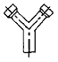
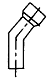
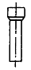
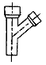
(정답률: 81%)
33. 다음 중 관목에 해당하는 수종은?
- 화살나무
- 목련
- 백합나무
- 산수유
(정답률: 72%)
34. 건조한 땅이나 습지에 모두 잘 견디는 수종은?
- 향나무
- 계수나무
- 소나무
- 꽝꽝나무
(정답률: 52%)
35. 다음 중 대나무에 대한 설명으로 틀린 것은?
- 외관이 아름답다.
- 탄력이 있다.
- 잘 썩지 않는다.
- 벌레 피해를 쉽게 받는다.
(정답률: 57%)
3과목: 조경 시공 및 관리
36. 다음 중 흉고직경을 측정할 때 지상으로부터 얼마 높이의 부분을 측정하는 것이 가장 이상적인가?
- 60cm
- 90cm
- 120cm
- 200cm
(정답률: 87%)
37. 다음 그림 중 수목의 가지에서 마디 위 다듬기 요령으로 가장 좋은 것은?
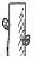
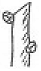
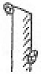
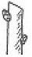
(정답률: 86%)
38. 다음 중 심근성 수종으로 가장 적당한 것은?
- 버드나무
- 사시나무
- 자작나무
- 느티나무
(정답률: 71%)
39. 다음 중 유자격자는 모두 입찰에 참여할 수 있으며, 균등한 기회를 제공하고, 공사비 등을 절감할 수 있으나 부적격자에게 낙찰될 우려가 있는 입찰방식은?
- 득명입찰
- 일반경쟁입찰
- 지명경쟁입찰
- 수의계약
(정답률: 88%)
40. 다음 중 거푸집 설치시 콘크리트에 접하는 면에 칠하는 박리제로 가장 부적당한 것은?
- 중유
- 듀벨
- 식물성 기름
- 파라핀함성수지
(정답률: 52%)
41. 그림과 같은 뿌리분에 새끼감기 요령은 어떤 방법에 의한 것인가?
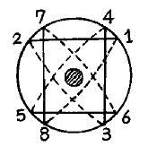
- 4줄감기
- 4줄 세 번감기
- 3줄 두 번감기
- 돌려감기
(정답률: 76%)
42. 양단면 모양과 양단면의 거리가 아래 그림과 같을 때, 양단면평균법에 의해 토량을 산출한 값은?
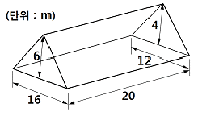
- 480m3
- 520m3
- 640m3
- 720m3
(정답률: 45%)
43. 다음 중 벽돌쌓기 작업에 관한 설명으로 틀린 것은?
- 시공시 가능하며 통줄눈으로 쌓는다.
- 벽돌은 쌓기 전에 충분히 물을 축여 쌓는다.
- 벽돌은 어느 부분이든 균일한 높이로 쌓아 올린다.
- 치장 줄눈은 되도록 짧은 시일에 하는 것이 좋다.
(정답률: 65%)
44. 서양 잔디 중 가장 양질의 잔디면을 만들 수 있어 그린용으로 폭넓게 이용되고, 초장을 4 ~ 7mm로 짧게 깍아 관리 하는 잔디로 가장 적당한 것은?
- 한국잔디류
- 버뮤다그라스류
- 라이그라스류
- 벤트그라스류
(정답률: 80%)
45. 다음 중 모란의 이식 적기는?
- 2월 상순 ~ 3월 상순
- 3월 상순 ~ 4월 중순
- 6월 상순 ~ 7월 중순
- 9월 중순 ~ 10월 중순
(정답률: 53%)
46. 다음 중 순공사원가를 가장 바르게 표시한 것은?
- 재료비 + 노무비 + 경비
- 재료비 + 노무비 + 일반관리비
- 재료비 + 일반관리비 + 이윤
- 재료비 + 노무비 + 경비 + 일반관리비 + 이윤
(정답률: 80%)
47. 다음 중 한 가지에 많은 봉우리가 생긴 경우 솎에 낸다든지, 열매를 따버리는 등의 작업 목적으로 가장 적당한 것은?
- 생장조장을 돕는 가지 다듬기
- 세력을 갱신하는 가지 다듬기
- 착화 및 착과 촉진을 위한 다음기
- 생장을 억제하는 가지 다음기
(정답률: 75%)
48. 다음 중 시설물의 관리를 위한 방법으로 적합하지 못한 것은?
- 콘크리트 포장의 갈라진 부분은 파손된 재료 및 이물질을 완전히 제거한 후 조치한다.
- 배수시설은 정기적인 점검을 실시하고, 배수구의 잡물을 제거한다.
- 벽돌 및 자연석 등의 원로포장의 파손시는 모래를 당초 기본 높이 만큼만 깔고 보수한다.
- 유희시설물의 점검은 용접부분 및 움직임이 많은 부분을 철저히 조사한다.
(정답률: 83%)
49. 부리분의 직격을 정할 때 그 계산식이 바른 것은?(단, A : 뿌리분의 직경, N : 근원직경, d : 상수(상록수 4, 낙엽수 3))
- A = 24 + (N - 3) × d
- A = 22 + (N + 3) × d
- A = 25 + (N - 3) × d
- A = 20 + (N + 3) × d
(정답률: 85%)
50. 성토 4500m3를 축조하려 한다. 토취장의 토질은 점성토로 토량변화율은 L = 1.20, C = 0.90 이다. 자연상태의 토량을 어느 정도 굴착하여야 하는가?
- 5000m3
- 5400m3
- 6000m3
- 4860m3
(정답률: 40%)
51. 다음 중 규준틀에 관한 설명으로 틀린 것은?
- 공사가 완료된 후에 설치한다.
- 토공의 높이 너비 등의 기준을 표시한 것이다.
- 건물의 모서리에 설치한 규준틀을 귀규준틀이라고 한다.
- 건물 벽에서 1 ~ 2m 정도 떨어져 설치한다.
(정답률: 76%)
52. 다음 중 40m2의 면적에 팬지를 20cm ×20cm 간격으로 심고자 한다. 팬지 묘의 필요 본수로 가장 적당한 것은?
- 100
- 250
- 500
- 1000
(정답률: 60%)
53. 해충의 방제 방법 분류상 ‘장복소’를 설치하여 해충을 방제하는 방법은?
- 물리적 방제법
- 내병성 품종 이용법
- 생물적 방제법
- 화학적 방제법
(정답률: 71%)
54. 인공적인 수형을 만드는데 적합한 수목의 특징으로 틀린 것은?
- 자주 다음어도 자라는 힘이 쇠약해지지 않는 나무
- 병이나 벌레 등에 견디는 힘이 강한 나무
- 되도록 잎이 작고 잎의 양이 많은 나무
- 다음어 줄 때마다 잔가지와 잎보다는 굵은 가지가 잘 자라는 나무
(정답률: 81%)
55. 다음 벽돌의 줄눈 종류중 우리나라의 전통담장의 사고석 시공에서 흔히 볼 수 있는 줄눈의 형태는?
- 오목줄눈
- 둥근줄눈
- 빗줄눈
- 내민줄눈
(정답률: 61%)
56. 플라타너스에 발생 된 흰불나방을 구제하고자 할 때 가장 효과가 좋은 약제는?
- 주론수화제(디밀란)
- 디코폴유제(켈센)
- 포스팜액제(다무르)
- 지오판도포제(톱신페스트)
(정답률: 41%)
57. 자연상태에서 점질토(보통의 것)의 ㎥당 중량으로 가장 적합한 것은?
- 900 ~ 1100 kg
- 1200 ~ 1400 kg
- 1500 ~ 1700 kg
- 1800 ~ 2000 kg
(정답률: 46%)
58. 다음 중 굴착용 기계에 해당하지 않는 것은?
- 크램쉘
- 파워쇼벨
- 불도저
- 스크레이퍼
(정답률: 58%)
59. 가해방법에 따른 해충의 분류 중 잎을 갉아먹는 해충은?
- 진딧물
- 솔나방
- 몽애
- 밤나방
(정답률: 65%)
60. 다음 중 뿌리부분에 밧줄을 걸어 이동하는 방법인 ‘북걸기’로 가장 적합한 것은?
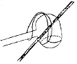
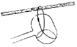
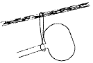
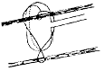
(정답률: 52%)